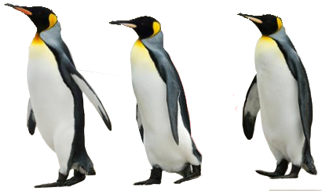

NoVaLUG
Welcome to the
Northern Virginia Linux Users Group
About NoVaLUG
The Northern Virginia Linux Users Group (NoVaLUG) is the oldest LUG in the Northern VA area and likely in the whole of US. Established 1993, the group's focus is on
open source software with a primary area of interest being
Linux. NoVaLUG members meet monthly to socialize and learn from one-another, as well as from guest speakers. Attendees include a mix of IT professionals, hobbyists, students, and other interested individuals. Presentations are open for Q&A. Topics of presentations include software use and development — a wide range of related topics, some esoteric, e.g., assembling and using a micro-computer (Raspberry Pi) to do aerial photography from a kite. Time us usually set aside at the end of meetings for attendees to discuss job opportunities for seekers as well as offerings by employers.
This web page was developed and written with open source tools. Read
more below about this example of the use of open source software.
Meetings
Next Meeting
An Introduction to Linux
We're going back to basics. For beginners and just curious - learn what makes Linux a great computer operating system, and how to get started with basic tasks.
Bring your questions about things you've wondered about, find new/better ways to do things you thought was hard to do and overall get this Linux thing de-mystified.
Monthly meetings are held in Northern Virginia, normally on the second Saturday, from 10:00 a.m. to 12 noon; they may be canceled around holidays. Attendees are encouraged to arrive by 9:45 a.m.
- Topics / Details are available on the
NoVaLUG meetup page.
-
Directions — including address and illustrations showing relative locations of parking and meeting space.
Meeting Videos / Streaming / Slides, etc.
NoVaLUG meetings are usually streamed to YouTube. They may also be uploaded for viewing after meetings
(INDEX).
Mailing / Discussion List
NoVaLUG maintains a mailing list for discussion of topics related to Linux and other open source subjects. Participants post questions to which others may provide answers. Announcements and other items of interest may be posted to the list. Interested parties may join by accessing the
NoVaLUG mailing list entry page). We ask that participants behave in a civil manner and respect the rights and opinions of others.
Linux and open source enthusiasts are encouraged to join the mailing list and to participate in discussions thereon to make it a vibrant resource for the community.
More about Open Source Software
This web page was developed using open source software:
- The operating system used is
Xubuntu variant of Linux. The "X" variant is "slimmer" and less demanding of resources. The Long Term Support (LTS) version is used for improved stability, freedom from bugs, and lesser need for upgrade.
- jEdit, a "programmer's text editor." The author of this web page keeps coming back to it. One can even use regex expressions for search / replace, and that can be across files.
- This web page was written from scratch in Hypertext Markup Language(
HTML), using
Cascading Style Sheets (CSS) and other open open source applications.
- The NoVaLUG graphic was constructed from photos of a penguin (swag) and a PC monitor, using
The GIMP. The GIMP is a free, powerful, image editing and manipulation program, the power of which rivals expensive, closed-source, commercial software.
- GIMP is an acronym for "GNU Image Manipulation Program."
- GNU: General Public License: The GNU General Public License (GNU GPL or GPL) is a widely-used free software license, which guarantees end users the freedom to run, study, share and modify the software.[7] The license was originally written by Richard Stallman of the Free Software Foundation (FSF) for the GNU Project, and grants the recipients of a computer program the rights of the Free Software Definition.[8] The GPL is a copyleft license, which means that derivative work can only be distributed under the same license terms. This is in distinction to permissive free software licenses, of which the BSD licenses and the MIT License are widely-used examples. GPL was the first copyleft license for general use.
- The web is an excellent source of info on coding for web sites. Frequent reference was made to resources at
w3cschools for reminders and tips on html and css coding.
- This web page was validated for compliance with standards for coding of web pages using W3C's
Markup Validation Service and their
CSS Validation Service.
- In addition to the above, many other valuable applications are available and free. Notably,
Libre Office provides a complete suite applications, i.e., Writer, Calc, Impress, and Draw, used for word processing, spreadsheets, presentations and drawing, respectively. Libre Office use is not limited to use under the Linux OS.
[Return to referring paragraph]

What's with the Penguin?
Tux, a penguin character, is the official brand character of the Linux kernel. Originally created as an entry to a Linux logo competition, Tux is the most commonly used icon for Linux, although different Linux distributions depict Tux in various styles. The character, also commonly called the Linux mascot, is used in many other Linux programs and as a general symbol of Linux. [Ref: Wikipedia]